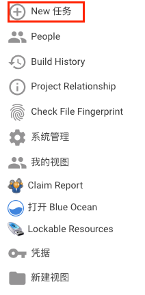
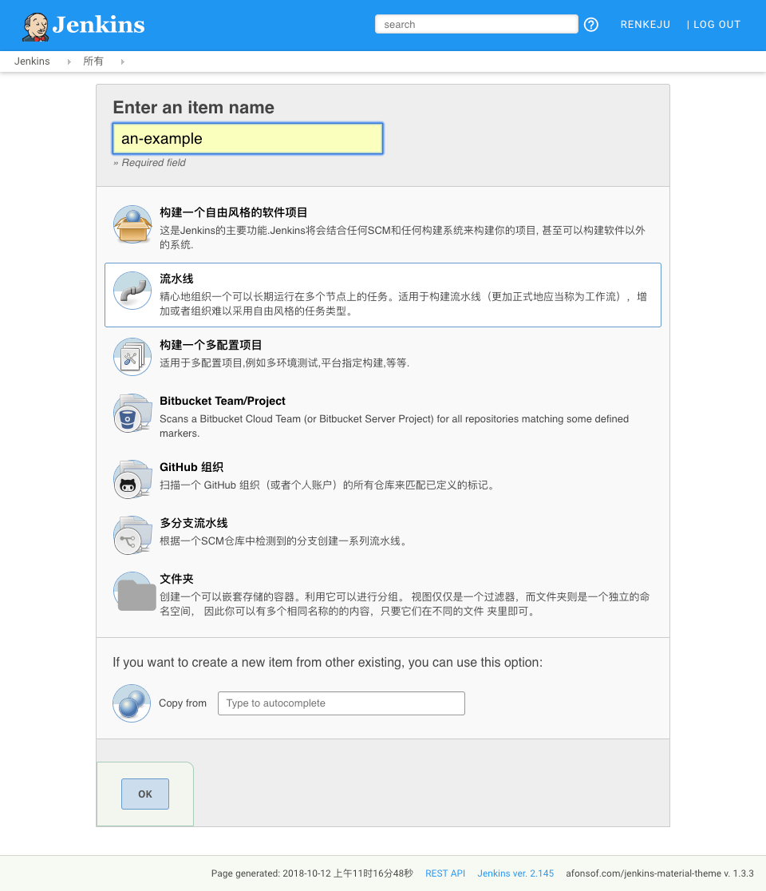
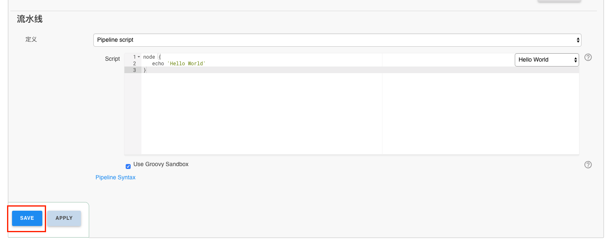
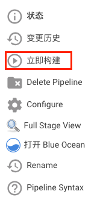
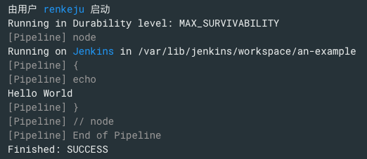
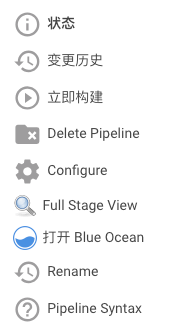
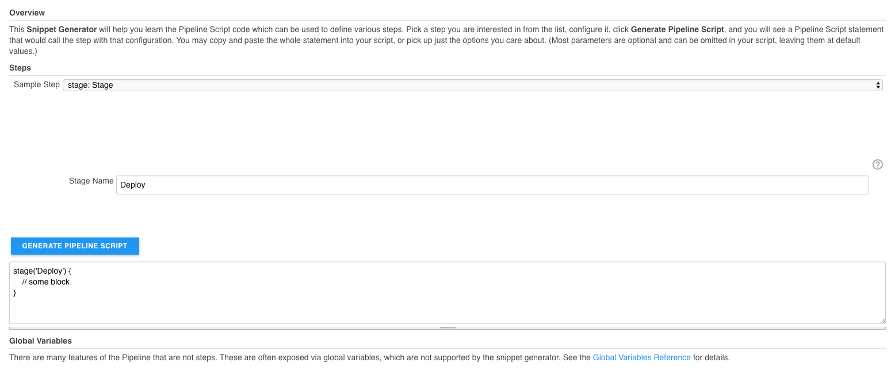

入门¶
Jenkins Pipeline 是一套插件，支持将连续输送 Pipeline 实施和整合到 Jenkins。Pipeline 提供了一组可扩展的工具，用于通过 Pipeline DSL 为代码创建简单到复杂的传送 Pipeline。
本节介绍 Jenkins Pipeline 的一些关键概念，并帮助介绍在运行的 Jenkins 实例中定于和使用 Pipelines 的基础知识。
Pipeline 定义¶
脚本 Pipeline 是用 Groovy 写的。Groovy 语法的相关位将在本文档中根据需要进行介绍，因此，当了解 Groovy 时，不需要使用 Pipeline。 可以通过以下任一方式创建基本 Pipeline：
- 直接在 Jenkins 网页界面中输入脚本
- 通过创建一个 Jenkinsfile 可以检入项目的源代码管理库
用任一方法定义 Pipeline 的语法是一样的，但是 Jenkins 支持直接进入 Web UI 的 Pipeline，通常认为最佳实践是在 Jenkinsfile Jenkins 中直接从源代码控制中加载 Pipeline。
在 Web UI 中定义 Pipeline¶
要在 Jenkins Web UI 中创建基本 Pipeline，请按照下列步骤操作：
单击 Jenkins 主页上的 New Item
输入 Pipeline 的名称，选择 Pipeline，然后单击确定。
Attention
Jenkins 使用流水先的名称在磁盘上创建目录。包含空格的管道名称可能会发现不希望路径包含空格的脚本中的错误。
在脚本文本区域中，输入 Pipeline，然后单击保存。
单击立即构建可以运行 Pipeline
单击“构建历史记录”下的 #1，然后单击控制台输出可以查看 Pipeline 的完整输出。
上面的示例显示了在 Jenkins Web UI 中创建的基本 Pipeline 的成功运行，使用两个步骤：
Jenkinsfile (Scripted Pipeline) node { echo 'Hello World' }- node 在jinkins 环境中分配一个执行器和工作空间
- echo 在控制台输出中写入简单的字符串
在 SCM 中定义管道¶
复杂的 Pipeline 难以在 Pipeline 配置页面的文本区域内进行写入和维护。为了使这更容易，Pipeline 也可以在文本编辑器中，并检查源控件，作为 Jenkinsfile，Jenkins 可以通过 Pipeline 脚本从 SCM 选项加载的控件。 为此，在定义 Pipeline 时，从 SCM 中选择 Pipeline 脚本。 选择 SCM 选项中的 Pipeline 脚本后，不要在 Jenkins UI 中输入任何 Groovy 代码；您只需要制定要从其中检索 Pipeline 的源代码的路径。更新制定的存储库中，只要 Pipeline 配置了 SCM 轮询触发器，就会触发一个新构建。
Note
文本编辑器，IDE，GitHub 等将使用 Groovy 代码进行语法高亮显示，第一行 Jenkinsfile 应该是
#!/usr/bin/env groovy Jenkinsfile
内置文档¶
Pipeline 配有内置的文档功能，可以更轻松地创建不同复杂性的 Pipeline。根据 Jenkins 实例中安装的插件自动生成和更新内置文档。 内置文档可以在全局范围找到： http://localhost:8080/pipeline-syntax/ 假设你有一个 Jenkins 实例在本地端口 8080 上运行。同样的文档也作为管道语法链接到任何配置的 Pipeline 的侧栏项目中。
代码段生成器¶
内置的 “Snippet Generator” 实用程序有助于为单个步骤创建一些代码，发现插件提供的新步骤，或为特定步骤尝试不同的参数。
Snippet Generator 动态填充 Jenkins 实例可用的步骤列表。可用的步骤数量取决于安装的插件，它明确地暴露了在 Pipeline 中使用的步骤。
要使用代码段生成器生成步骤代码片段：
在配置的流水线或 http://localhost:8080/pipeline-syntax 导航到 Pipeline 语法链接。
在“样品步骤”下拉惨菜单中选择需要的步骤
使用 “样品步骤”下拉列表下方的动态填充区域配置所选步骤。
单击生成 Pipeline 脚本以创建一个可以复制并黏贴到 Pipeline 中 Pipeline 代码段。
要访问有关所选步骤的其他信息和/或文档，请单机帮助图标（由上图中的红色箭头指示）
全局变量引用¶
处理代码片段生成器之外，Pipelin 还提供了一个内置的”全局变量引用“。像 Snippet Generator 一样，它也是由插件动态填充的，与代码段生成器不同的是，全局变量引用仅包含 Pipeline 提供的变量的文档，这些变量可用于 Pipeline。
在 Pipeline 中默认提供的变量是：
ENV
脚本化 Pipeline 可访问的环境变量，例如：
env.PATH或env.BUILD_ID。请参阅内置的全局变量参考，以获取管道中可用的完成和最新的环境变量列表。PARAMS
将为 Pipeline 定义的所有参数公开为只读地图，例如：
params.MY_PARAM_NAMEcurrentBuild
可用于发现有关当前正在执行的 Pipeline 信息，于如属性
cureenBuild.result，currentBuild.displayName等等请教内置的全局变量引用了一个完整的，而且是最新的的，可用的属性列表currentBuild。